JM-Orgue
JM-Orgue è un organo a canne virtuale per Windows, macOS e Linux. Riproduce direttamente i set di campioni Hauptwerk e GrandOrgue, compresi i grandi set surround e le definizioni Hauptwerk Custom Organ, e si suona con una tastiera MIDI, una consolle o il mouse. Ciò che suoni può essere annotato subito, in notazione tradizionale o in klavar, e stampato come PDF. Questo manuale guida attraverso il programma; le schermate provengono dalla versione 0.9.16 e da versioni successive, il testo descrive la versione 0.9.53.
© Martijn van der Kolk. Le schermate sono state realizzate con organi dimostrativi e propri set di prova; indirizzi di rete, token di accesso e cartelle utente sono stati resi illeggibili.
1. Per iniziare
Installazione
Scarica il programma di installazione dell'ultima versione dalla pagina delle release del progetto (per Windows JM-Orgue_<versione>_x64-setup.exe) ed eseguilo. L'installazione è per un solo utente e non richiede diritti di amministratore. Per Windows esiste anche un pacchetto MSI, per macOS un DMG e per Linux un AppImage o un deb.
Il programma può essere usato liberamente. I set di campioni non sono inclusi: li ottieni dai rispettivi autori. Nella pagina iniziale della libreria sono indicati alcuni autori che offrono set gratuiti.
Aggiornamento
JM-Orgue controlla da solo se esiste una nuova versione. In tal caso in alto compare un avviso. Scegli Aggiorna ora: il programma scarica l'aggiornamento, ne verifica la firma, lo installa e si riavvia. Se vuoi prima solo scaricare, scegli Scarica. Puoi anche controllare a mano in Impostazioni generali → Aggiornamento e feedback → Cerca aggiornamenti.
Le tre schermate principali
In alto ci sono tre schede: Organo (si suona), Impostazioni organo (tutto ciò che riguarda l'organo caricato) e Impostazioni generali (tutto ciò che riguarda il programma nel suo insieme). I tasti F1, F2 e F3 passano direttamente dall'una all'altra. La freccia accanto al nome dell'organo chiude l'organo e torna alla libreria.
2. La libreria
All'avvio vedi la libreria degli organi: una scheda per organo con foto, nome, costruttore, località e numero di registri. Fai clic su una scheda per caricare l'organo. La griglia mostra otto schede affiancate e tre righe visibili; se nella libreria ci sono più organi, scorri con i due pulsanti freccia rotondi a destra (Scorri verso l'alto, Scorri verso il basso) o con la rotella del mouse. I pulsanti sono abbastanza grandi per uno schermo touch e scompaiono quando tutto sta sullo schermo.
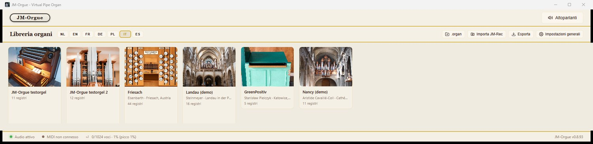
Trovare set di campioni
Sotto le schede c'è il blocco Altri set di campioni con pulsanti verso autori che offrono set gratuiti: Piotr Grabowski, Sonus Paradisi, Lars Palo e Augustine's Virtual Organs. Ogni pulsante apre nel browser la pagina di download di quell'autore; JM-Orgue legge direttamente i loro file Hauptwerk e GrandOrgue, senza conversione. Accanto c'è il pulsante Manuale, che apre questo manuale in PDF nella lingua del programma. Se c'è una connessione a Internet, la libreria mostra inoltre in Disponibili per il download una scheda per ogni set offerto dal progetto stesso: fai clic, scegli una cartella, e il set viene scaricato, estratto e aggiunto alla libreria.
Aggiungere organi
- .organ: scegli la definizione dell'organo (GrandOrgue
.organo definizione Hauptwerk). Si sceglie il file di definizione, non la sola cartella dei campioni: solo la definizione conosce registri, unioni, tremoli ed eventuali posizioni di registrazione aggiuntive. - .orgue e .rar: scegli un pacchetto GrandOrgue (
.orgue) o un archivio RAR (.rar), anche un archivio in più parti: scegli una delle parti e tieni tutte le parti nella stessa cartella. JM-Orgue lo estrae una sola volta nella propria cartellapakketten, mostra l'avanzamento nella barra di caricamento e carica l'organo; aprirlo una seconda volta non costa nulla. Se manca una parte, l'archivio è protetto da password o danneggiato, segue un messaggio chiaro. La cartella estratta occupa spazio su disco: puoi eliminare la cartellapakkettennella cartella dei dati del programma per liberarlo. - JM-Rec import: importa un set di campioni creato con JM-Rec.
- Esporta: crea da una cartella di campioni una definizione d'organo (
.organ), che poi carichi con il pulsante .organ.
Pulsanti della scheda: foto, ricerca, rimozione
Quando passi il mouse su una scheda, in alto a destra della foto compaiono tre pulsanti: cerca la foto online (globo), scegli tu la foto (macchina fotografica) e rimuovi dalla libreria (croce). La rimozione toglie solo la scheda dalla libreria; i file sul disco restano. Se tieni premuta una scheda per 3 secondi, il programma cerca di nuovo la foto.
La ricerca online mostra alcune foto liberamente utilizzabili di Wikimedia Commons. In alto nella finestra ci sono i campi Chiesa, Luogo e Organaro, già compilati con i dati della definizione dell'organo e delle informazioni allegate; correggili se non sono esatti e scegli Cerca. Sotto resta un campo libero per un termine personale. Fai clic su una foto per adottarla; fonte e licenza compaiono sotto la scheda.
Set scaricabili
I set che puoi scaricare con il pulsante di download nel programma compaiono come riquadro con bordo tratteggiato nella stessa griglia dei tuoi organi. Un set già installato non viene più proposto.
Hauptwerk Custom Organ (CODM) e il rapporto di importazione
Una definizione Custom Organ (.CustomOrgan_Hauptwerk_xml) descrive solo la struttura dell’organo: tastiere, registri, accoppiamenti e tremoli. I campioni si trovano in pacchetti di campioni separati nella cartella OrganInstallationPackages, che deve stare accanto alla definizione o sopra di essa. JM-Orgue lo controlla prima del caricamento.
- Se manca un pacchetto di campioni, la schermata L’organo è incompleto mostra i pacchetti mancanti (con il nome) e quanti registri suonerebbero. L’organo attuale resta attivo finché non scegli.
- Scegli la cartella dei pacchetti… permette di indicare la cartella che contiene
OrganInstallationPackages; la scelta viene ricordata per ogni organo. Nessun file viene copiato o convertito. - Carica parzialmente carica solo i registri di cui ci sono i campioni; una barra in alto lo ricorda e apre il Rapporto di importazione. Se nulla è suonabile, si può solo annullare.
- Il Rapporto di importazione indica cosa era atteso e cosa è stato caricato, quali registri sono stati saltati e perché, e dove JM-Orgue usa un’approssimazione (ad esempio: il tremolo suona come una semplice modulazione quando le forme d’onda del set non sono leggibili).
- JM-Orgue non può leggere i campioni nel formato protetto
.hbwdi Hauptwerk; un set che ne dipende viene segnalato come non suonabile. - Un registro con una sola canna (cimbalstern, usignolo, un singolo colpo di campana) non va sulla tastiera ma diventa un pulsante nella sezione Registri degli effetti, come nei set Hauptwerk normali. I registri con più canne restano sulla tastiera.
- I pistoni rapidi della definizione non ricevono pulsanti propri: comandano un registro, un’unione o un tremolo che è già presente come pulsante nel suo manuale. Il rapporto indica per ogni pistone a che cosa rimanda.
- Le unioni si comportano come prescrive la guida Hauptwerk: un’unione collega un manuale ai somieri della destinazione e non si propaga a un’unione successiva. I set GrandOrgue continuano invece a propagarsi.
- Se la definizione è scritta nella forma «abbreviata» (i campi si chiamano solo
a,b,c), il rapporto indica se il significato di quei campi è stato dedotto in modo sicuro.
Un organo CODM con tutti i campioni si carica senza domande. Se la definizione indica per un registro che gli armonici superiori devono suonare più forti o più deboli, JM-Orgue lo applica al caricamento. Se suoni esattamente come in Hauptwerk non è stato verificato: servono un set originale completo e una registrazione di riferimento.
Il rapporto di importazione mostra anche, solo a titolo informativo, ciò che il set porta con sé: i valori delle casse espressive, un eventuale crescendo, le forme d'onda registrate del tremolo e il sistema del vento (i mantici con la loro frequenza propria e pressione, e quali divisioni ne dipendono). Il tremolo può seguire queste forme d'onda e il modello del vento il sistema del vento (vedi capitolo 7, Comportamento del set).
Set di campioni con WavPack o FLAC
Molti set GrandOrgue sono compressi con WavPack; i file si chiamano spesso semplicemente .wav. JM-Orgue li legge direttamente, compresi punti di loop e rilasci, e li carica in fretta perché di ogni registrazione viene decompresso solo l’inizio. Solo se un file non è davvero leggibile (per esempio un file FLAC o un file WavPack multicanale), una barra in alto indica quanti file sono stati saltati.
3. Caricare e suonare un organo
Caricamento
Durante il caricamento JM-Orgue legge in memoria l'inizio di ogni registrazione di canna; il resto viene letto durante l'esecuzione. Un grande set surround può quindi richiedere un po' di tempo; la barra di avanzamento mostra a che punto è il caricamento. Sotto l'indicatore c'è il pulsante Annulla: se lo premi mentre i campioni vengono ancora letti, il programma torna all'organo che stava già suonando, senza cambiare nulla. Utile se per sbaglio hai fatto clic sulla scheda sbagliata. Se il motore audio sta già commutando, il pulsante non fa più nulla.
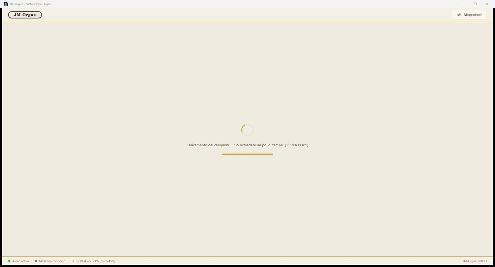
Il motore
Dopo il caricamento il motore dell'organo è acceso per impostazione predefinita non appena il set contiene una registrazione del motore, e si sente subito un leggero fruscio d'aria. Per esercitarsi in silenzio senza quel rumore d'aria, spegni il pulsante Motore nella barra degli strumenti; la barra gialla appare solo quando il motore è davvero fermo. Quali rumori di sfondo sono attivi di default e con quale volume lo regoli dalla barra degli strumenti con il piccolo mixer accanto al pulsante dei rumori di sfondo.
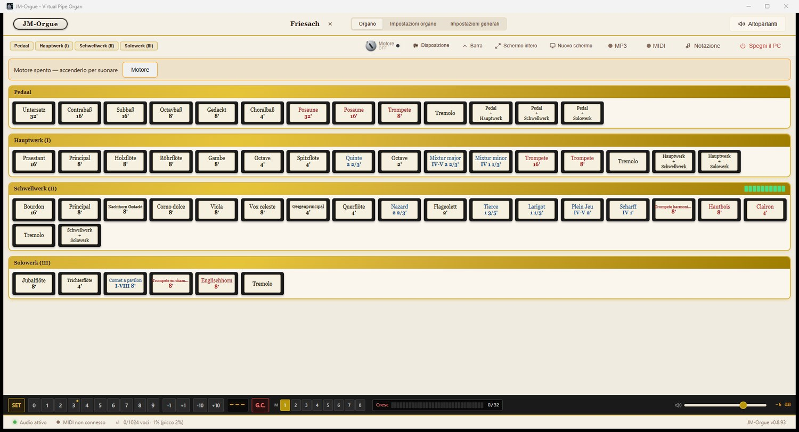
Registri, unioni e tremoli
Ogni manuale ha il proprio riquadro di registri. Fai clic su un pomello per estrarre il registro; i registri estratti diventano gialli. Il colore del nome indica la famiglia: le ance, per esempio, sono rosse, le misture e le quinte blu. Se per un singolo registro la classificazione automatica non è corretta, scegli tu il gruppo di colore in Ordine dei registri (capitolo 7). In ogni riquadro ci sono anche il tremolo e le unioni (per esempio «Hauptwerk + Schwellwerk»); le unioni usano la stessa dimensione di carattere dei registri. La barra verde a destra nell'intestazione del manuale mostra la posizione della cassa espressiva. I manuali sono nell'ordine delle tastiere dell'organo (I, II, III), non nell'ordine del file. Se il set ha registri degli effetti (cimbalstern, usignolo e simili), questi compaiono come pulsanti in una sezione propria, Registri degli effetti.
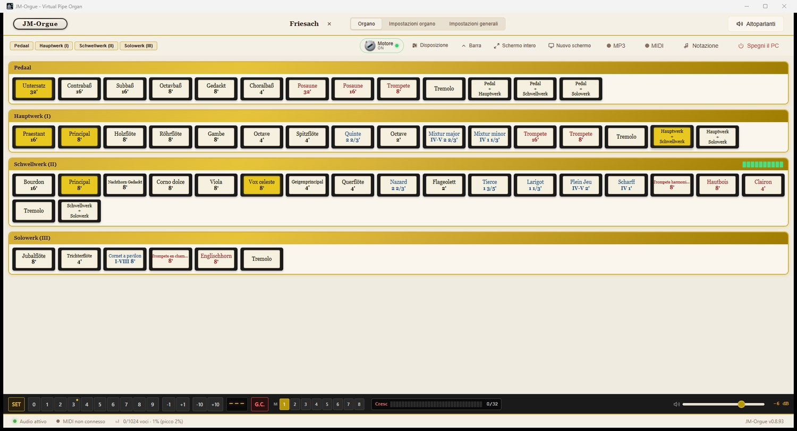
La barra del combinatore
In basso c'è la barra del combinatore (setzer) con i comandi della consolle:
| Elemento | Funzione |
|---|---|
| SET e 0–9 | Premi SET e poi una cifra per memorizzare la registrazione attuale; la cifra da sola la richiama. Un puntino accanto alla cifra indica che lì è memorizzata una registrazione. |
| −1 / +1, −10 / +10 | Passa alla registrazione precedente o successiva, oppure di dieci avanti o indietro. |
| G.C. | General Cancel: tutti i registri spenti. |
| M 1–8 | Livelli di memoria: otto banchi separati di registrazioni. |
| Pulsante di copia | Copia la combinazione in…: richiama una combinazione, premi il pulsante di copia, scegli la destinazione con −10 / +10 e una cifra, e la combinazione viene copiata lì, anche oltre il confine di un blocco (per esempio da 9 a 10). La registrazione che sta suonando non cambia. |
| Cresc | Crescendo generale (vedi capitolo 7). La barra mostra il gradino attuale. |
| Cursore del volume | Volume principale. Un doppio clic ripristina il valore predefinito; con la rotella del mouse cambia di 1 dB alla volta. |
Ogni pulsante della barra del combinatore può essere collegato a un pulsante della tua consolle: fai clic con il tasto destro (o tieni premuto 3 secondi) e poi premi il pulsante sulla consolle.
Imparare il canale MIDI di un manuale
Non devi passare prima dalle Impostazioni organo: fai clic destro sul nome di una divisione sopra i registri — o tienilo premuto per 2 secondi su uno schermo touch — e il programma chiede la nota più grave e la più acuta di quel manuale. Il canale viene impostato senza lasciare la consolle.
4. La barra degli strumenti
Sopra i registri c'è la barra degli strumenti. A sinistra i manuali (Pedale, Hauptwerk, …) sono pulsanti: con essi mostri o nascondi il manuale. A destra ci sono le funzioni seguenti.
| Pulsante | Cosa fa |
|---|---|
| Motore | Accende o spegne il motore dell'organo. |
| Disposizione | Apre il menu della disposizione (vedi sotto). |
| Barra | Mostra o nasconde la barra principale con le schede e il pulsante del profilo. |
| Schermo intero | Modalità consolle: solo registri e barra del combinatore (F11). |
| Nuovo schermo | Apre una finestra aggiuntiva con gli stessi registri, per esempio per un secondo monitor o un secondo manuale. |
| MP3 | Registra ciò che senti. La registrazione va in Documenti\JM-Orgue-opnames. Fai clic sul contatore rosso per fermare; il programma dice poi dove si trova il file. |
| MIDI | Registra ciò che suoni (solo le note) come file .mid. Fai clic sul contatore blu per fermare e scegli dove salvare. |
| Notazione | Apre la finestra di notazione: le note compaiono mentre suoni, in pentagramma o in klavar, con righi, sovraincisione e modifica, e si stampano direttamente in PDF (vedi sotto). |
| Spegni il PC | Chiude il software e il computer, dopo conferma; prima viene salvato l'ultimo stato. Con il tasto destro o tenendo premuto 3 secondi si collega il pulsante a un pulsante della consolle. |
Il menu della disposizione
Con Disposizione adatti l'aspetto allo schermo: Adatta sceglie la dimensione dei pomelli in modo che tutti i registri stiano sullo schermo, i pulsanti meno/più cambiano larghezza e altezza dei pomelli, e inoltre scegli se disporre i manuali uno sotto l'altro o affiancati (verticale), pomelli tondi invece che rettangolari e dove mettere le unioni (nel manuale o in una barra propria). La scelta viene ricordata per ogni organo.
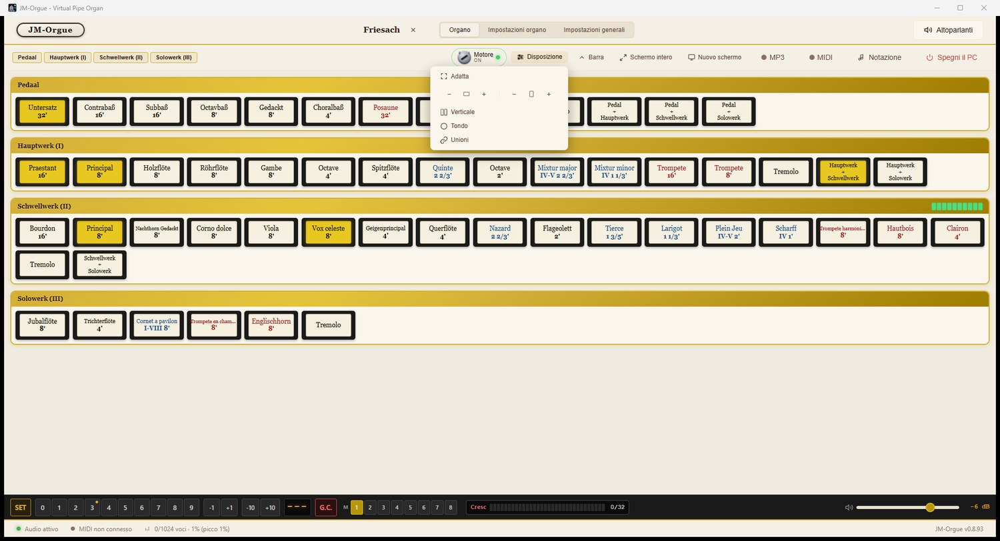
Schermo intero (modalità consolle)
In questa modalità scompaiono la barra del titolo, la barra delle applicazioni di Windows e la barra principale: vedi solo i registri e la barra del combinatore. In alto c'è una stretta striscia con quattro pulsanti: Barre (riporta temporaneamente la barra principale), Motore (acceso o spento), Esci da schermo intero e Spegni (chiude software e computer). F11 attiva e disattiva questa modalità; Esc la disattiva.
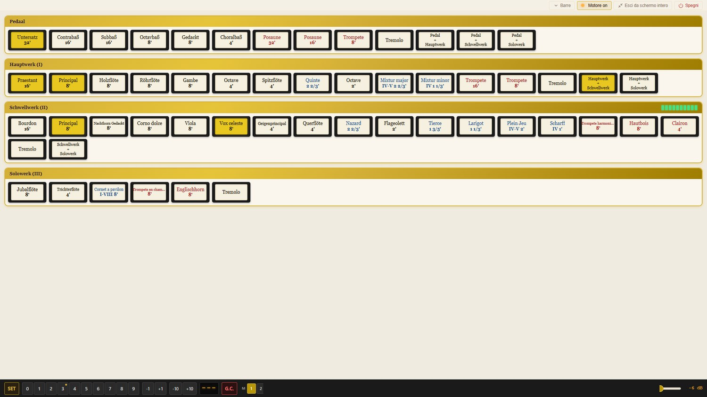
Un secondo schermo
Nuovo schermo apre una finestra separata che puoi trascinare su un altro monitor o lasciare piccola accanto alla finestra principale. Ha una propria disposizione: se i pomelli sono troppo piccoli, scegli Disposizione e imposta larghezza e altezza dei pomelli oppure scegli i manuali uno sotto l'altro o affiancati.
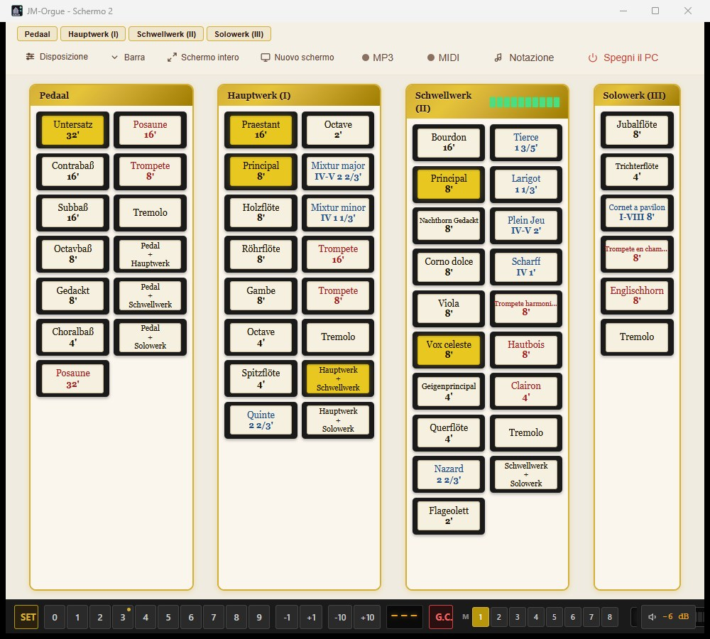
La finestra di notazione: pentagramma, klavar e PDF
Con Notazione si apre una finestra separata in cui la tua esecuzione viene annotata; non serve un secondo programma per comporre o rifinire un brano. Scegli Nuovo… per un nuovo brano (titolo, compositore, indicazione di tempo, tonalità, tempo, numero di battute e righi) e premi Registra: la registrazione inizia dalla prima nota che suoni. Un brano ha più righi, per esempio destra, sinistra e pedale; ogni rigo ha in Righi & voci un proprio Canale con un pulsante Impara (suona un solo tasto sulla tastiera che deve finire su quel rigo). Se suoni destra, sinistra e pedale su tre canali MIDI, finiscono così contemporaneamente su tre righi. Una nuova take (sovraincisione) si aggiunge a ciò che c'è già.
- Vista: Pentagramma mostra i righi tradizionali; Klavar mostra il klavarskribo, in cui le linee sono i tasti neri e il tempo scorre dall'alto verso il basso. Per ogni rigo scegli la mano (destra, sinistra, pedale o R+L con punto di divisione) e con Estensione se i righi si estendono intorno alle note suonate o su tutta la tastiera.
- Stampa / PDF stampa la partitura o la salva come PDF, nella vista scelta. In Esporta trovi inoltre Salva come MIDI…, Salva come MusicXML (per altri programmi di notazione) e, per il klavar, Salva come SVG….
- Salva conserva il brano come partitura JM-Orgue (
.jmscore), Apri… lo richiama; un file MIDI esistente può essere importato come take aggiuntiva. Nelle schede Inserimento, Testi & segni e Riproduzione inserisci le note passo per passo, aggiungi testi e segni, e riproduci il brano sull'organo.
Scorciatoie nella finestra di notazione: Ctrl+N nuovo brano, Ctrl+O apri, Ctrl+S salva, Ctrl+C copia.
5. Più posizioni di ascolto
Alcuni set di campioni sono registrati in più punti della chiesa, per esempio vicino, davanti, a metà e dietro. Un set così mostra nella barra degli strumenti i pulsanti Prospettiva, uno per posizione. Fai clic su una posizione per attivarla o disattivarla; ne possono suonare più insieme. Alla loro destra c'è la posizione di ascolto: un cursore tra «alla consolle» e «in fondo» che mescola in modo continuo le posizioni registrate.
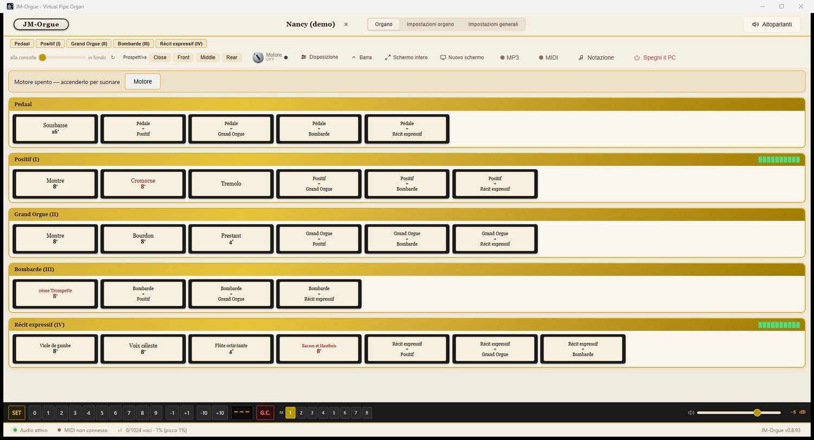
6. La procedura guidata per un organo nuovo
Quando carichi un organo per la prima volta, si avvia da sola la procedura guidata «Configurazione dell'organo». In sei passi percorre tutto ciò che va collegato alla tua consolle. Puoi cambiare tutto in seguito e puoi riavviare la procedura in Impostazioni organo → Instradamento → Procedura guidata. Più tardi chiude la procedura e la riproporrà alla prossima apertura; Salta (passo 1) la salta del tutto.
- Inizio: panoramica dei passi.
- Canale MIDI per manuale: per ogni manuale scegli Apprendi e suona un tasto su quel manuale. Il programma ricorda il canale. I pulsanti funzionano solo se è collegato un dispositivo MIDI (Impostazioni generali → MIDI); altrimenti compare un avviso.
- Casse espressive e crescendo: scegli Apprendi e muovi il pedale da completamente chiuso a completamente aperto. Lo stesso vale per il crescendo generale. Se il set ha casse espressive per voce (capitolo 9), compaiono anche qui.
- Uscite per gli altoparlanti: scegli driver e dispositivo, salvali come profilo «Altoparlanti» e scegli per ogni manuale le uscite dell'interfaccia audio su cui deve suonare. Sotto ci sono le stesse scelte per il suono del motore, il rumore ambientale e i clic della meccanica, i registri degli effetti e il rumore del tremolo, se il set li ha.
- Uscite per le cuffie: lo stesso per il secondo profilo, per esempio l'uscita cuffie. Da quel momento passi da un profilo all'altro con il pulsante Altoparlanti in alto a destra.
- Fatto: le impostazioni sono state salvate per questo organo.
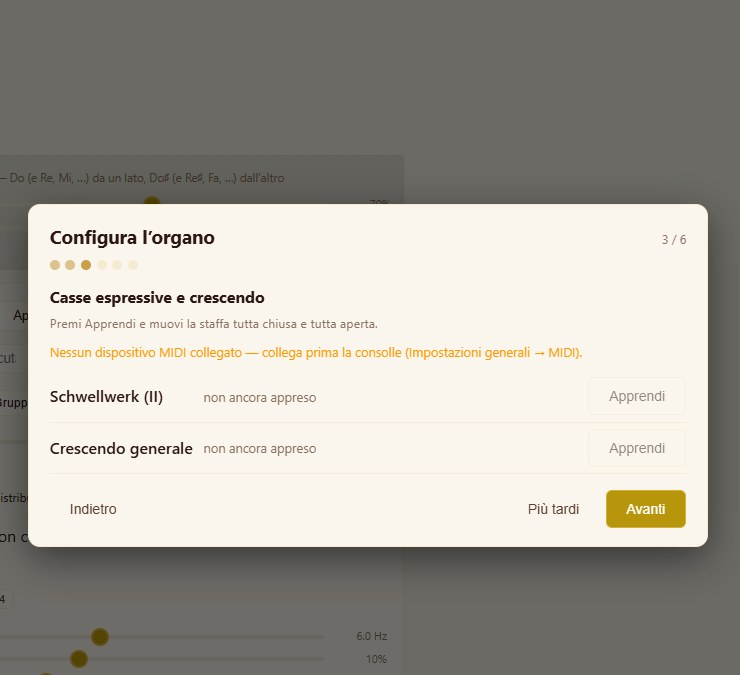
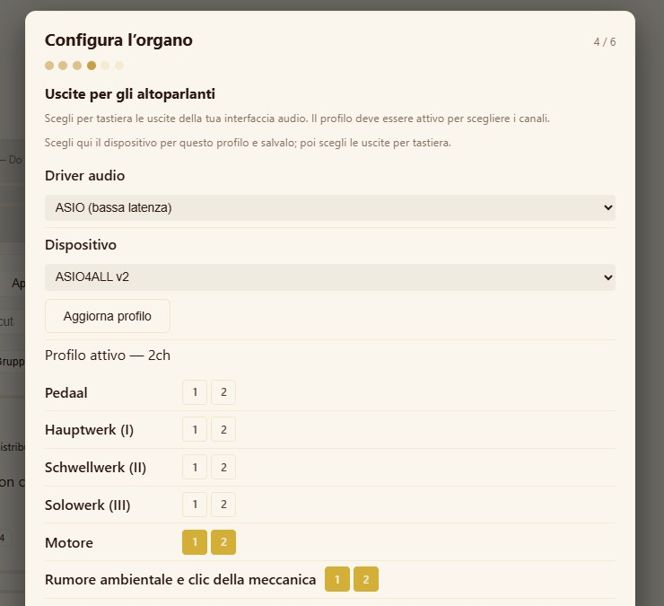
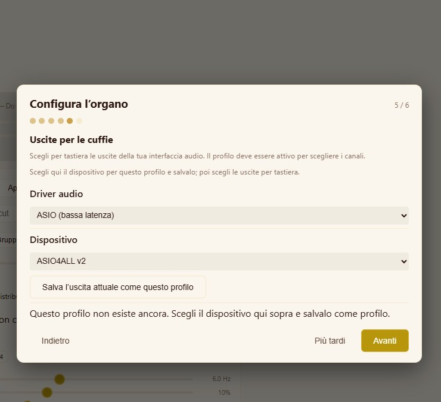
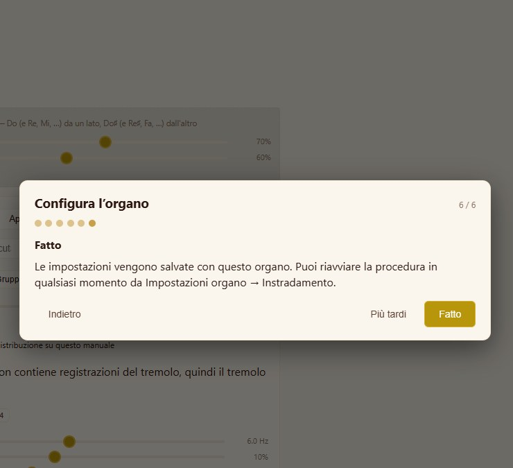
7. Impostazioni organo
Le impostazioni dell'organo caricato vengono memorizzate per organo. In alto ci sono le schede Suono, Caricamento, Crescendo, Ordine dei registri, Instradamento e Tutto; l'ultima dispone tutti i blocchi uno sotto l'altro. In Caricamento scegli le posizioni di registrazione e i registri che vengono caricati in memoria.
Ogni definizione di organo ha un proprio file di impostazioni, anche quando più definizioni si trovano nella stessa cartella. Se il programma trova un vecchio file .jm-settings.json di cui non si conosce il proprietario, chiede se appartiene all'organo scelto. Il vecchio file viene conservato. Se hai dubbi, scegli Annulla; la scelta viene ricordata per questo organo su questo PC, anche dopo un riavvio. Sotto Ordine dei registri → esporta/importa impostazioni potrai poi scegliere Importa le vecchie impostazioni dell’organo…. Le impostazioni esistenti vengono sostituite solo dopo un'ulteriore conferma; il programma ne fa prima una copia.
Suono
Il primo blocco contiene le impostazioni principali:
- Volume: il volume principale di questo organo.
- Temperamento: «Originale» suona le canne come sono state registrate. Gli altri temperamenti (equabile e temperamenti storici) accordano le canne in base all'altezza misurata di ogni registrazione. Sotto la scelta vedi quante canne hanno un'altezza misurata. Ciò che indica la definizione dell'organo ha la precedenza: un registro ondeggiante con uno scarto dichiarato (Unda maris, Voix céleste) suona sul temperamento più quello scarto, una registrazione la cui altezza è indicata nella definizione viene accordata su quella, e un set che dichiara di non suonare all'altezza originale dell'organo suona sempre sull'altezza di destinazione. Con Temperamento personale... imposti tu stesso lo scarto in cent per ogni nota. Con Carica file Scala… leggi un file .scl (il formato mondiale per temperamenti microtonali e storici della Fondazione Huygens-Fokker); il temperamento caricato compare nella lista e viene conservato per le sessioni successive.
- Accordatura: tutto insieme più alto o più basso, in cent.
Il riverbero regola il riverbero. Se il set ha già l'acustica della chiesa nelle registrazioni, viene segnalato (con il pulsante Torna alla registrazione (riverbero spento) per disattivare il riverbero aggiuntivo): un riverbero aggiuntivo è allora questione di gusto. Scegli tra Algoritmico (riverbero calcolato con RT60, ritardo, smorzamento e dimensione della sala, anche come preset) e A convoluzione (IR) con una propria risposta all'impulso (IR). Con Mix decidi quanto riverbero si sente.
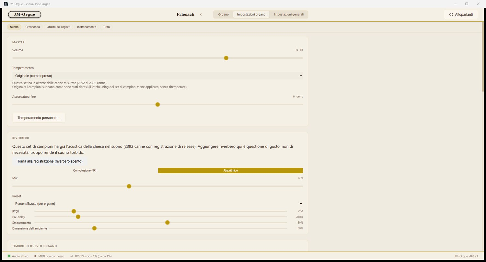
Il timbro di questo organo è una regolazione del timbro separata per ogni organo; la correzione per cuffie o altoparlanti è distinta, nelle impostazioni generali. Il modello del vento fa «respirare» l'organo: un accordo con molti registri abbassa la pressione del vento, come in un organo vero, e flauti e ance reagiscono in modo diverso. Scegli il numero di gruppi di vento (quali manuali condividono gli stessi mantici) e, per ogni gruppo, dimensione del mantice, smorzamento, caduta massima di pressione e carattere del vento.
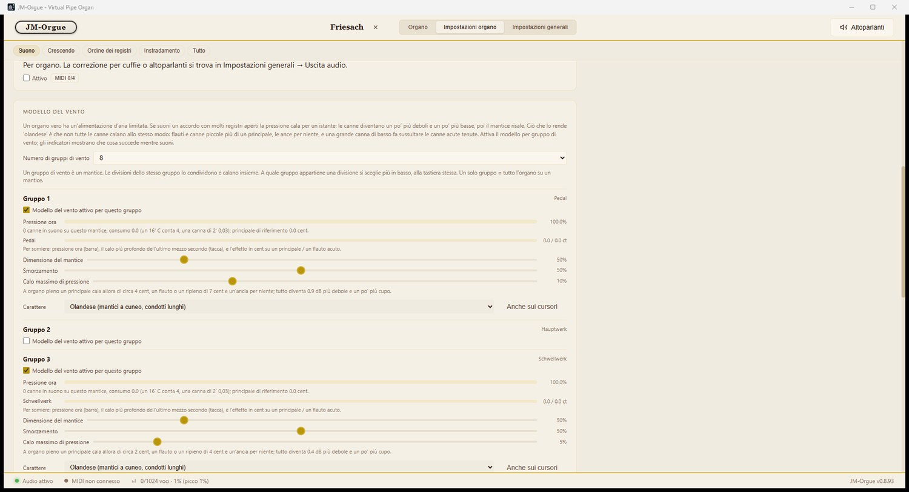
Rumori mostra i suoni continui contenuti nel set, come il motore e il rumore della sala. Imposti il volume, accendi o spegni il motore e puoi attivare la meccanica della tastiera (tasti che scattano). La meccanica della tastiera è disattivata per impostazione predefinita, perché occupa molta memoria e richiede di ricaricare l'organo.
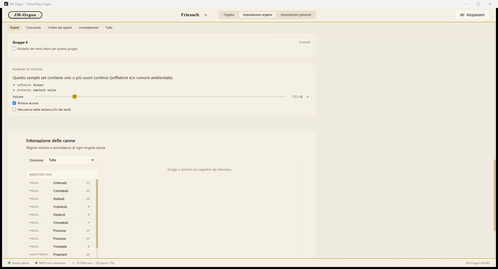
In fondo c'è l'intonazione delle canne: scegli a sinistra un registro e regola volume e accordatura di ogni canna singolarmente. Per spostare tutto il registro in una volta sola, imposta i cursori sul valore desiderato e premi Applica a tutte le canne — ogni canna di quel registro riceve così la stessa regolazione di volume e intonazione.
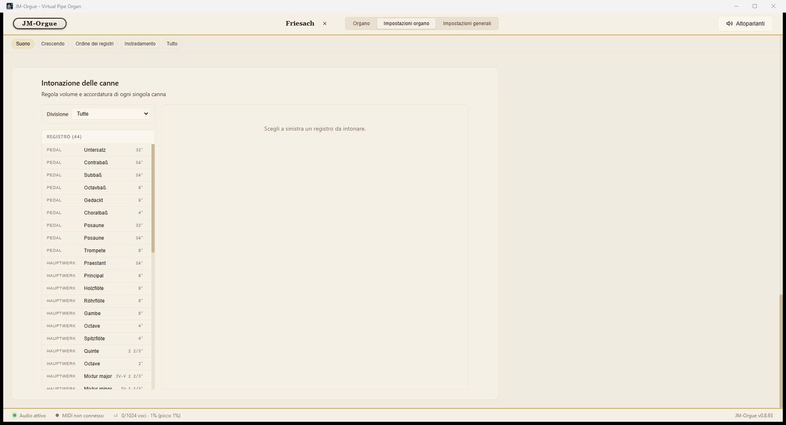
Comportamento del set e registri non caricati
Sotto Suono c'è il blocco Comportamento del set (questo organo) con caselle che decidono se JM-Orgue segue i dati del set stesso: Applica i livelli del set, Dissolvenza del rilascio del creatore del set, Gli accoppiamenti seguono il set, Leggi tutte le unioni del set, Sistema del vento del set, Il tremolo segue la forma d'onda del set e Taglia le code silenziose (con una soglia in dB). Valgono per organo: un organo che usavi già resta com'era, un organo appena installato segue il set. Usa i valori della cassa espressiva del set è sempre disattivata per impostazione predefinita; attiva significa che la cassa espressiva parte con l'attenuazione e il filtro che il set indica stesso, per le divisioni che non hai impostato tu. Dopo aver cambiato una casella, ricarica l'organo.
Leggi tutte le unioni del set legge, per un set Hauptwerk, anche le unioni che puntano a un'altra tastiera (con le unioni all'ottava e quelle all'interno della stessa tastiera) invece di indovinarle. Con Sistema del vento del set il modello del vento segue il sistema del vento che un set Hauptwerk descrive: ogni mantice del set diventa un gruppo di vento a sé, il consumo d'aria per canna viene dal set, e la posizione centrale di dimensione del mantice e calo massimo è il valore di quel mantice. Così, con un'opera piena, per esempio il mantice del pedale cala per conto suo. I controlli del modello del vento continuano a funzionare e scalano questi valori; il modello del vento stesso deve essere attivo. Con Il tremolo segue la forma d'onda del set il tremolo di una divisione assume come forma la forma d'onda registrata di un set Hauptwerk (un ciclo misurato di altezza e intensità) e la velocità del set, e ogni canna la profondità che il set indica per essa. Velocità e profondità impostate per il tremolo non valgono allora; i registri con vere registrazioni del tremolo non cambiano.
Nella scheda Caricamento, il blocco Non caricare alcuni registri omette al caricamento i registri che non usi, per organo: si risparmiano memoria e tempo di caricamento. Apri l'elenco, togli la spunta ai registri che non ti servono (per ogni registro è indicata la memoria che richiede in anticipo) e scegli Applica e ricarica. Carica tutto rimette tutte le spunte. La scelta viene salvata con l'organo; un organo senza scelta carica tutto.
Crescendo
Il crescendo generale estrae passo dopo passo sempre più registri quando muovi il pedale del crescendo. Decidi tu quali registri entrano a quale gradino:
- Attivo accende il crescendo; Gradini è il numero di gradini.
- Riempimento automatico inserisce una proposta adatta ai registri di questo organo. Con le opzioni sotto decidi se entrano le unioni, se entrano i registri di colore (sesquialtera, cornetto, terza), le ance da 32′ e le ance in chamade, e se le unioni d'ottava entrano solo nel tutti. Cancella svuota la matrice.
- Nella matrice, un clic su una casella attiva o disattiva quel registro in quel gradino; Shift+clic lo imposta per tutti i gradini da quello in poi.
- Apprendi pedale collega il tuo pedale del crescendo; in fondo puoi anche inserire a mano canale e numero CC.
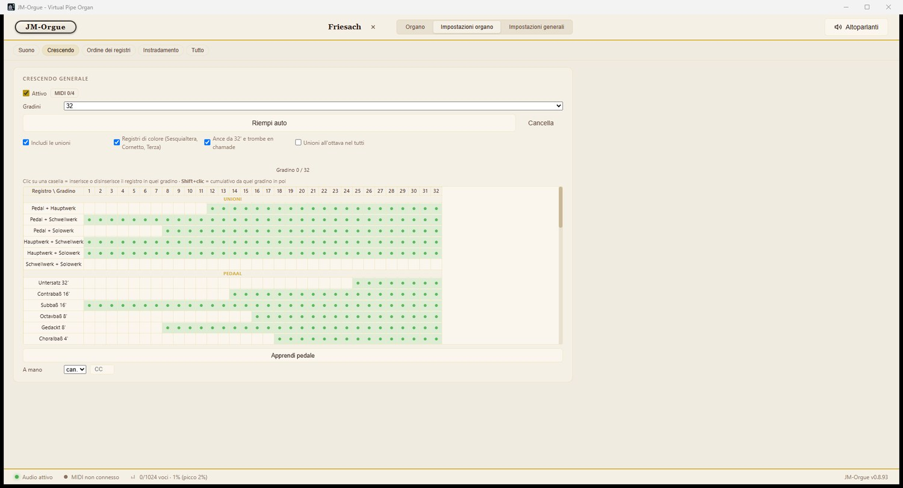
Se il set porta con sé un crescendo, accanto a Riempi auto compare il pulsante Dal set: i passi del set, limitati ai registri di questo organo e distribuiti sul numero di passi scelto. Non cambia nulla finché non premi il pulsante, e Annulla ripristina i passi.
Ordine dei registri
Qui decidi l'ordine dei registri in ogni manuale. Trascina un registro per la maniglia per spostarlo. Accanto a ogni registro vedi la lunghezza in piedi e la famiglia (colore del nome). Con le frecce cambi l'ordine passo per passo e Originale riporta l'ordine del file dell'organo. Se il riconoscimento automatico colora un singolo registro diversamente da come vuoi, scegli tu per ogni registro il gruppo di colore: Fondo, Mutazione o Ancia. È puramente visivo e viene memorizzato per ogni organo.
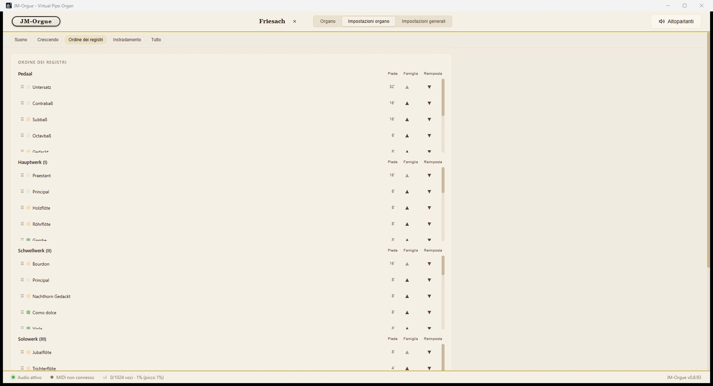
Instradamento
Questa scheda collega l'organo al tuo hardware. In alto c'è un blocco per ogni manuale:
- Canale: il canale MIDI su cui il manuale ascolta («Tutti» = ogni canale). Apprendi fissa canale ed estensione quando suoni prima il tasto più basso e poi il più alto; se sono troppo vicini, il programma avvisa invece di impostare un'estensione di pochi tasti. Se tutte le tue tastiere trasmettono sullo stesso canale, assegna a ogni dispositivo un canale fisso in Impostazioni generali → MIDI (capitolo 8).
- Trasp: trasposizione in semitoni. Estensione: tasto più basso e più alto. Ottava corta: per set con ottava di bassi corta.
- Cassa espressiva: attiva la cassa espressiva di quel manuale; compaiono allora i pulsanti per apprendere il pedale e le impostazioni di volume minimo e frequenza di taglio a cassa chiusa. I valori predefiniti sono −20 dB e 1500 Hz: il pedale agisce così in decibel in modo uniforme su tutta la corsa, come in Hauptwerk, e a cassa chiusa il suono diventa un po' più ovattato. Se il pedale sembra fare poco nella parte bassa, scegli una frequenza di taglio più alta; se vuoi una cassa chiusa più silenziosa, un volume minimo più basso (fino a −24 dB). Il pedale si impara anche direttamente dalla schermata dell'organo: fai clic destro sulla striscia di LED verdi accanto al nome del manuale — o tienila premuta 2 secondi su uno schermo touch — e appare la stessa finestra «pedale chiuso / pedale aperto».
- Alimentazione del vento: a quale gruppo di vento appartiene il manuale.
- Panorama e Uscite: posizione nell'immagine stereo e canali di uscita dell'interfaccia audio su cui suona il manuale. Due uscite consecutive formano una coppia stereo; un singolo canale suona in mono.
- C/Cis: divide le canne su due lati, come i somieri Do e Do diesis in un organo vero; forza e caduta globali sono nel blocco sopra.
- LFO del tremolo: se il set non ha vere registrazioni del tremolo, il programma lo calcola. Velocità, ampiezza e altezza si regolano qui.
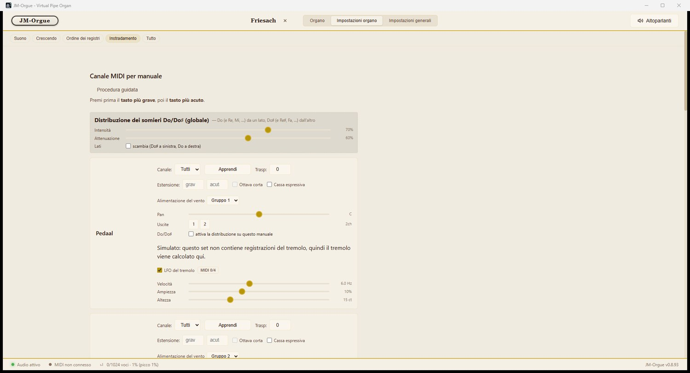
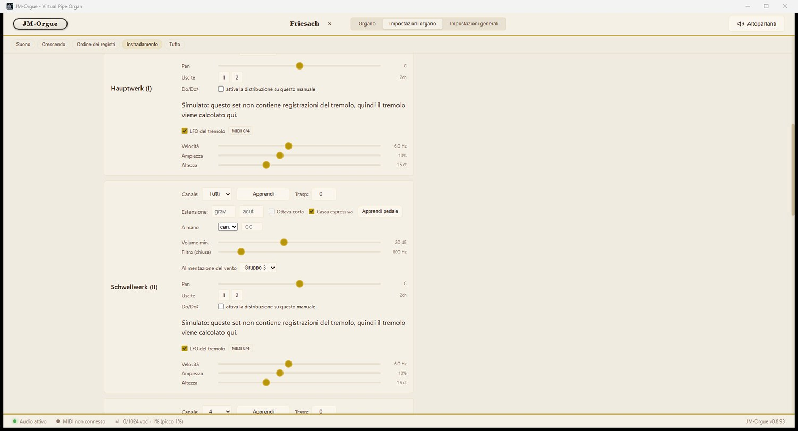
Più sotto c'è l'Uscita audio dei rumori: per ogni tipo di suono scegli da quali uscite viene riprodotto. Motore è il suono del motore; Rumore ambientale e clic della meccanica riguarda il rumore della sala e i clic di registri e tasti; i set con registri degli effetti (cimbalstern, usignolo e simili) e rumore del tremolo hanno una riga propria. Conta soprattutto con più di due uscite, quando i manuali suonano su canali diversi da 1–2. Subito sotto:
- Tastiera continua: i tasti fuori dall'estensione registrata di un registro suonano la canna più vicina, trasposta all'altezza giusta, invece di tacere. Una tastiera da 61 tasti continua così a suonare su un set con meno note. Le metà basso e soprano di un registro spezzato (Tromba 8 B/D, Cornetto D, Ripieno Basso…) si fermano al punto di divisione — il soprano continua in alto, il basso in basso, ma mai sovrapposti.
- Accordare automaticamente le canne: accorda le canne in base all'altezza misurata, conservando i registri volutamente ondeggianti. Attivo per impostazione predefinita.
- Correzione d'altezza: tutto insieme più alto o più basso in cent (Zero ripristina il valore).
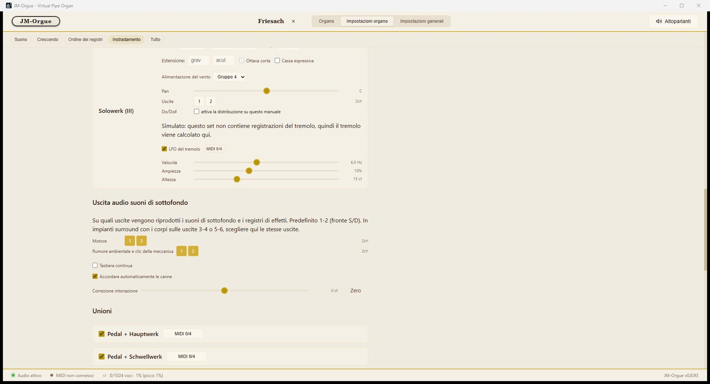
Più in basso ci sono le Unioni (attivazione e disattivazione, con un pulsante MIDI per ogni unione) e le unioni aggiuntive: unioni che non sono nel set di campioni ma che derivano dalla disposizione dei manuali; seleziona ciò che vuoi aggiungere e compare subito nella barra delle unioni. Le Assegnazioni MIDI sono un unico elenco di tutte le assegnazioni MIDI di questo organo, che puoi modificare, eliminare o aggiungere a mano. In fondo, Apri .mid permette di riprodurre un file MIDI sull'organo.
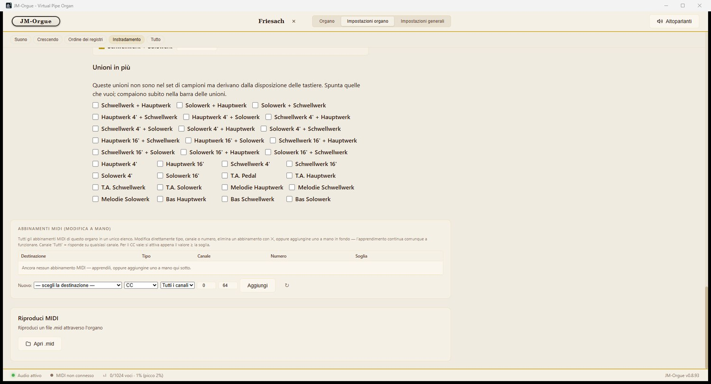
8. Impostazioni generali
Queste impostazioni valgono per il programma nel suo insieme. Le schede sono Uscita audio, Correzione dei campioni, MIDI, Apprendi pulsanti, Visualizzazione e Aggiornamento e feedback.
Uscita audio
- Driver audio e dispositivo: per la latenza minima scegli ASIO (per esempio il driver della tua interfaccia audio); WASAPI funziona con la normale scheda audio di Windows. La riga «Attualmente» qui sotto mostra cosa sta suonando in questo momento.
- Segnale di prova: fai clic sul numero di un canale per inviare un suono esattamente su quell'uscita e sentire quale presa appartiene a quale altoparlante.
- Polifonia e Core di calcolo per il missaggio: il numero massimo di canne che suonano insieme e il numero di core del processore su cui si distribuisce il lavoro di missaggio. La scelta predefinita è adatta al tuo computer; l'indicatore di carico mostra l'effetto.
- Riproduci i campioni stereo in stereo: mantiene l'immagine stereo delle registrazioni stereo. Disattivato significa mix mono e dimezza l'uso di memoria di tali set.
- Buffer iniziale per registrazione: quanto di ogni registrazione di canna è subito in memoria: 200 ms, 300 ms, 500 ms, 1 s o 2 s (predefinito). Un buffer più breve fa risparmiare molta memoria e tempo di caricamento; il resto viene letto durante l'esecuzione. La scelta vale dopo aver ricaricato l'organo. Dopo un numero sufficiente di registrazioni caricate, sotto compare un consiglio per questo PC, basato sui tempi di caricamento misurati; con Applica lo adotti. Non cambia nulla da solo.
- Dimensione del buffer: più piccola significa latenza minore, ma carica di più il computer. Applica attiva la scelta.
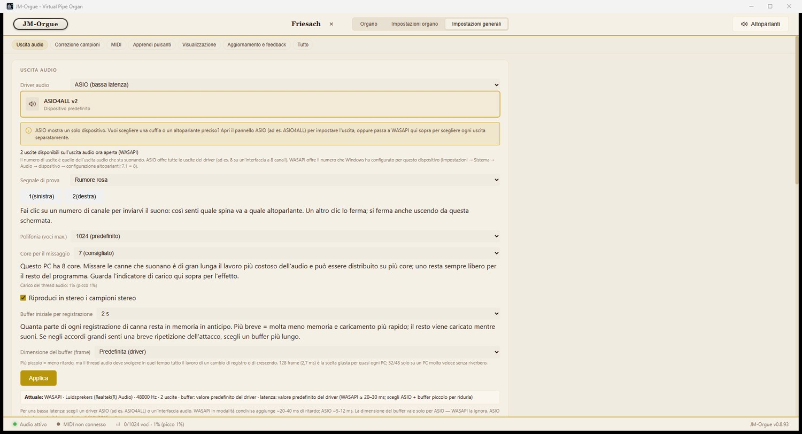
Altro in Uscita audio
- Bassi a un subwoofer (gestione dei bassi): toglie le basse frequenze dai canali principali e le invia, sommate, a un'uscita subwoofer (un filtro Linkwitz-Riley del quarto ordine). Scegli l'Uscita subwoofer, la Frequenza di taglio (Hz) (da 30 a 250 Hz) e il Livello del subwoofer (dB). Disattivato per impostazione predefinita; disattivato non costa nulla.
- Il limite di memoria segue la memoria libera: il tetto per i campioni caricati interamente segue la memoria libera al momento del caricamento di un organo.
- Priorità in tempo reale per il missaggio: dà un'alta priorità ai lavoratori di missaggio perché l'audio non si interrompa quando gira molto altro. Sotto la casella è indicato ciò che è attivo.
- Accanto a ogni scelta di Buffer iniziale per registrazione compare la memoria che l'organo caricato richiede in anticipo, per esempio «500 ms · 2,8 GB».
- Campioni in memoria: 16 bit compatto (predefinito) conserva a 16 bit anche i campioni che ci stanno esattamente, senza differenze di suono: metà della memoria per quei set. 16 e 24 bit compatto risparmia un quarto anche nei set a 24 bit, ma costa sensibilmente più calcolo; 32 bit (come prima) lo disattiva. Vale dopo aver ricaricato l'organo.
- Cache su disco dei campioni decodificati (attiva per impostazione predefinita): le registrazioni costose da preparare, come WavPack o quelle convertite alla frequenza di campionamento dell'uscita, vengono salvate su disco la prima volta e poi caricate molto più velocemente. Suonano esattamente allo stesso modo. Con Massimo imposti la dimensione, sotto compare quanto è in uso, e Svuota cache la svuota.
I profili di uscita memorizzano due impostazioni complete di uscita, per esempio altoparlanti tramite ASIO e cuffie tramite WASAPI, con la scelta dei canali per ogni manuale. Scegli l'uscita desiderata, fai clic su Salva la scelta attuale accanto a Altoparlanti o Cuffie, poi passa dall'una all'altra con il pulsante Altoparlanti in alto a destra o con un pulsante MIDI appreso. Il profilo attivo è evidenziato.
La correzione per cuffie o altoparlanti applica una correzione del timbro alla sola uscita (non all'organo): scegli per quale profilo vale, attivala e scegli un preset dall'elenco AutoEq oppure importa o esporta una correzione tua.
Più sotto ci sono le opzioni per avviare automaticamente il programma con Windows, caricare automaticamente l'ultimo organo aperto, chiudere tutto il software con la croce sullo schermo aggiuntivo e ripristinare l'ultima registrazione. L'archivio MIDI automatico salva in background tutto ciò che suoni come file .mid per sessione: inizia con la prima nota e termina dopo un silenzio.
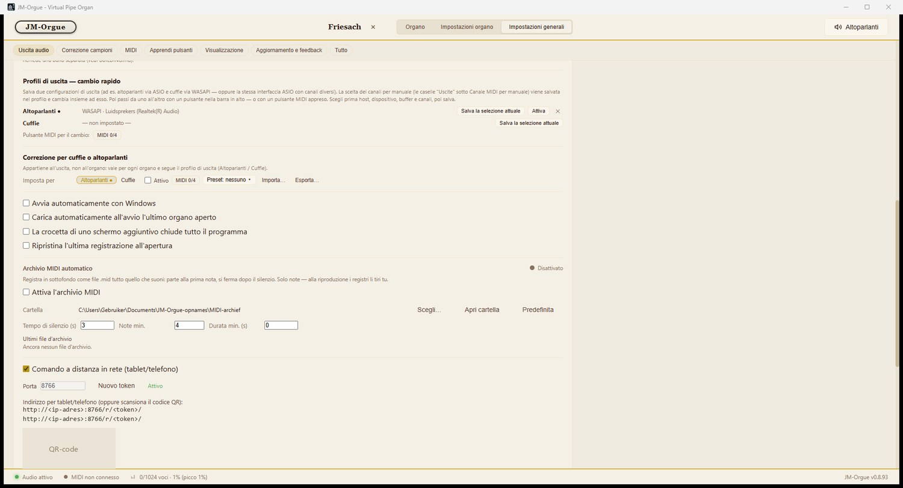
Con il controllo remoto in rete (tablet/telefono) comandi l'organo da un tablet o telefono sulla stessa rete Wi-Fi. Il programma mostra un indirizzo e un codice QR da scansionare, e tu scegli quali elementi e quali manuali compaiono sullo schermo esterno. La prima volta il Firewall di Windows chiede se JM-Orgue può ricevere connessioni: scegli «Consenti accesso» per le reti private.
In fondo c'è la frequenza di campionamento. Dipende dalla scheda audio stessa: con ASIO la imposti nel pannello del driver, con WASAPI nelle impostazioni audio di Windows.
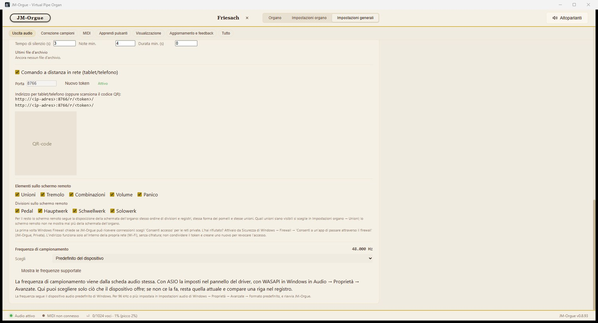
Correzione dei campioni
Due strumenti per mettere in ordine i campioni dell'organo caricato. Silenzio prima dell'attacco trova e toglie il silenzio all'inizio dei campioni (soglia del silenzio in dB e inizio da conservare si impostano da sé); Loop trova un buon loop di sostegno, vi inserisce una dissolvenza incrociata per una transizione dolce e salva i punti di loop nel file, con l'opzione di farlo solo per i file senza loop. Con Scansiona controlli prima cosa cambierebbe. Gli originali vengono prima conservati in una cartella _backup, prima che i file vengano sovrascritti.
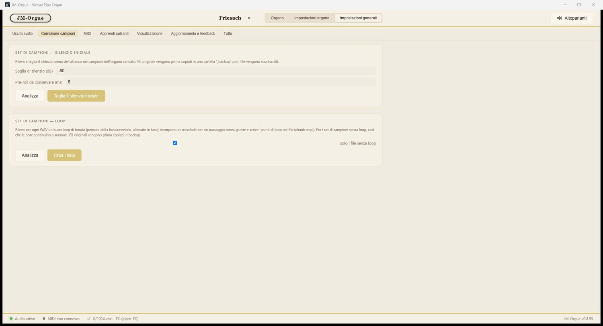
MIDI
Ingresso MIDI mostra i dispositivi MIDI collegati (con Aggiorna dispositivi cerchi di nuovo). Per ogni dispositivo puoi scegliere un canale fisso: tastiere che trasmettono tutte sul canale 1 comandano così manuali diversi, senza dover ripristinare i canali a ogni sessione. Se un dispositivo è su Dispositivo predefinito, non cambia nulla. In Bluetooth MIDI cerchi dispositivi wireless con Scansiona; anche i pulsanti di apprendimento che reagiscono a un solo tasto ascoltano una tastiera Bluetooth. Il ritorno di segnalazione (MIDI out) fa illuminare la tua consolle in base alla registrazione: scegli il protocollo (luci dei registri tramite Note On/Off, display di testo Hauptwerk o consolle Johannus/Content), l'uscita MIDI, il canale e la nota di base. Ogni registro riceve poi automaticamente un numero di nota a partire dalla nota di base, oppure apprendi un vero pulsante della consolle per ogni registro con Apprendi per ogni voce….
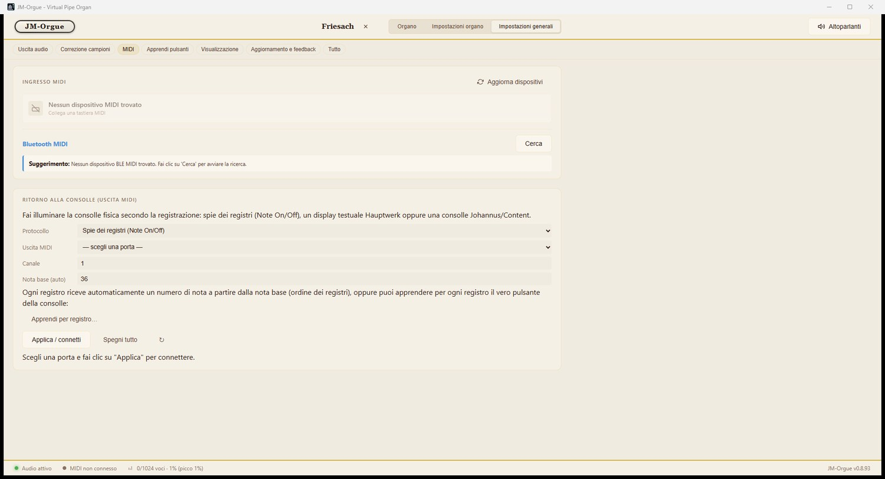
Apprendi pulsanti
Qui apprendi i pulsanti fissi della consolle (pistoni): accordatore, SET, passi dei preset, livelli di memoria e spegnimento del computer. I pulsanti delle cifre 0–9 si apprendono sulla barra del combinatore stessa (tasto destro o pressione di 3 secondi).
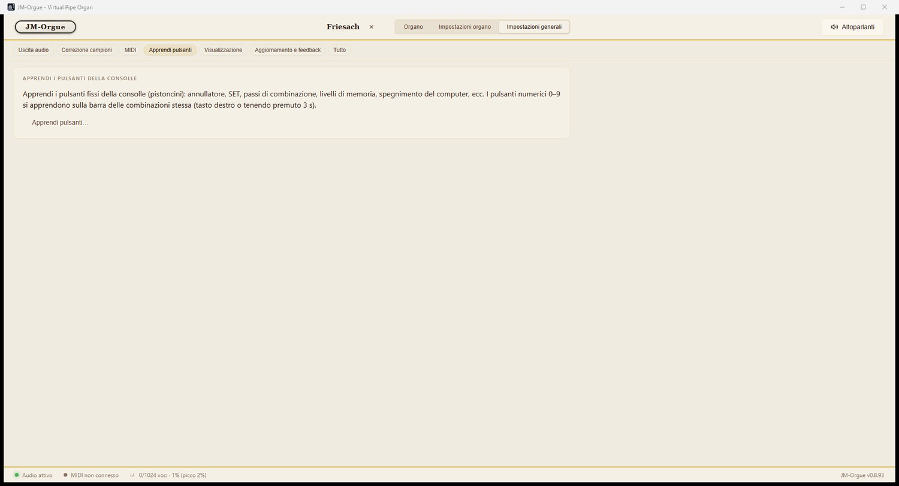
Visualizzazione
Scegli la lingua del programma (Nederlands, English, Français, Deutsch, Polski, Italiano ed Español) e l'aspetto: cinque preset di colori pronti (Base, Legno classico, Moderno minimalista, Notte e Sera) oppure imposta colori tuoi, dai loro un nome ed esportali. Più sotto regoli stile, dimensione e spessore del carattere dei registri e lo sfondo.
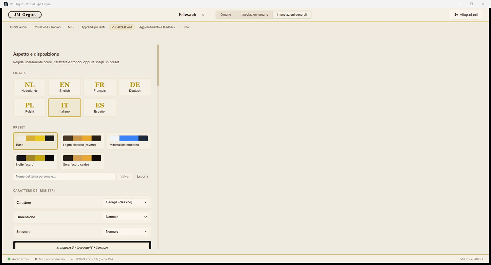
Aggiornamento e feedback
Qui trovi il numero di versione, le informazioni sulle fonti dei preset per cuffie e dei dati degli altoparlanti utilizzati, e i pulsanti Invia feedback…, Tramite GitHub (issues) e Cerca aggiornamenti.
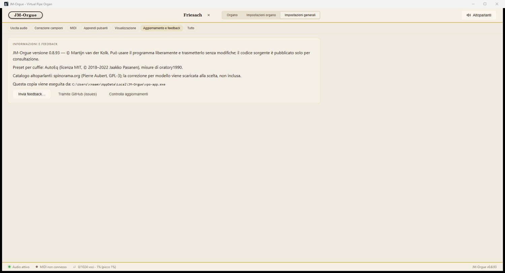
9. Configurazione acustica di un set
La definizione di un organo può rimandare a un file aggiuntivo, JM-ACOUSTICS.json, che descrive l'acustica del set: casse espressive assegnate a una voce anziché a un manuale, risposte all'impulso per il riverbero, percorsi di missaggio e uscite. Se il tuo set ha un file così, lo riconosci da un blocco aggiuntivo in Impostazioni organo → Suono.
- Il programma legge il file e lo controlla: dimensione del file, validità di tutti i riferimenti, percorsi che restano nella cartella dell'organo e collegamenti delle canne che corrispondono alla definizione caricata. Se qualcosa non va, l'organo suona semplicemente secondo la definizione normale e il blocco indica perché la configurazione non è stata letta.
- Casse espressive per voce: le voci che il file colloca in una cassa ricevono una propria cassa espressiva e un proprio pedale d'espressione, indipendentemente dal manuale su cui suonano. Una voce usata da due manuali segue così sempre la stessa cassa. Il pedale si apprende in Instradamento (Apprendi pedale) o nella procedura guidata.
- Le risposte all'impulso del set sono elencate sotto il blocco, con canali e durata. Con Usa come riverbero adotti una come riverbero a convoluzione. Il ruolo dei canali in tali registrazioni non è definito; il programma tratta i primi due come una coppia stereo.
- I percorsi di missaggio, i bus di uscita e le transizioni degli effetti del file non vengono per ora applicati automaticamente; resta determinante la definizione normale.
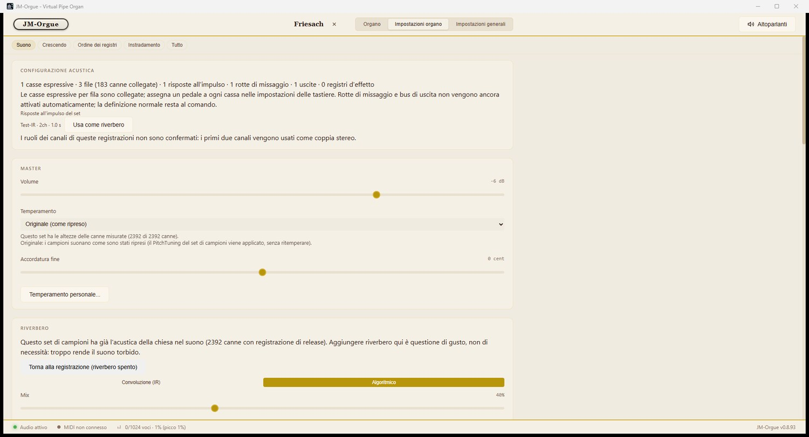
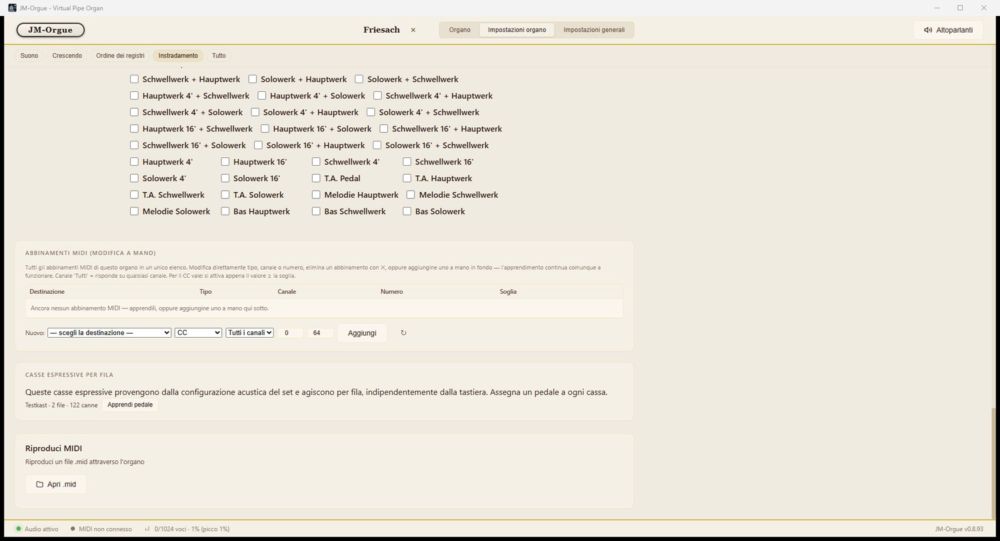
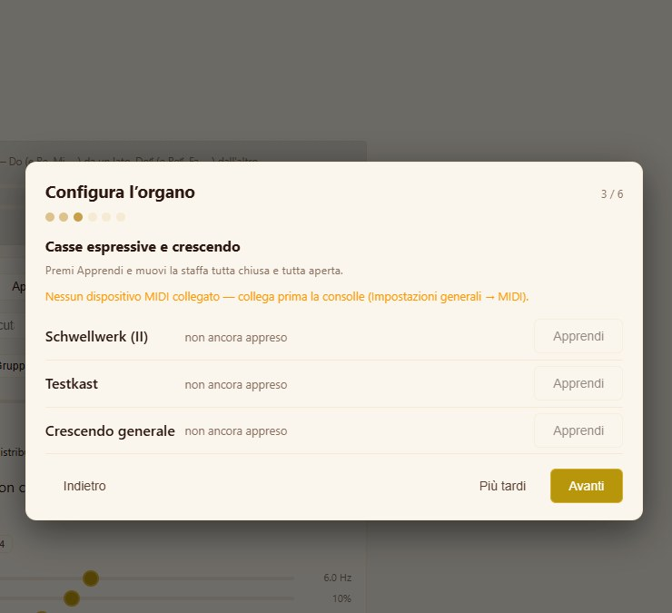
10. Scorciatoie da tastiera e consigli
| Tasto | Funzione |
|---|---|
| F1 F2 F3 | Organo, Impostazioni organo e Impostazioni generali. |
| F11 | Schermo intero (modalità consolle) acceso o spento. |
| Esc | Uscire dallo schermo intero. |
| Tasto destro o 3 s di pressione | Su un pulsante della barra del combinatore: collega quel pulsante a un pulsante della consolle (apprendimento MIDI). |
| Doppio clic sul volume | Il volume principale torna al valore predefinito. |
| Scheda premuta 3 s | Nella libreria: cerca di nuovo la foto di quella scheda. |
| Z…M e Q…I | Tastiera del computer come manuale: due ottave. Shift sposta un'ottava in su, Alt un'ottava in giù, anche insieme. |
| Ctrl+N / O / S | Nella finestra di notazione: nuovo brano, apri, salva. |
- Tutte le impostazioni vengono memorizzate per ogni organo, anche quando chiudi l'organo o il programma.
- Per una consolle fissa: attiva Avvio automatico con Windows e Carica automaticamente l'ultimo organo aperto e usa la modalità consolle.
- Con più di due uscite: scegli in Instradamento le uscite di ogni manuale e poi le stesse uscite per i rumori.
11. Risoluzione dei problemi e feedback
| Problema | Cosa puoi provare |
|---|---|
| Nessun suono | Il motore gira? In basso c'è «Audio attivo»? In Uscita audio è impostato il dispositivo giusto e le uscite dei manuali corrispondono alla tua interfaccia audio? Usa il segnale di prova per sentire le uscite. |
| La tastiera non reagisce | In basso compare «MIDI non connesso» finché non c'è un dispositivo MIDI. Controlla Impostazioni generali → MIDI e il canale MIDI del manuale in Instradamento. |
| L'organo suona stonato | Controlla che l'accordatura automatica delle canne sia attiva e scegli in Suono il temperamento «Originale» o quello desiderato. |
| Scricchiolii o interruzioni | Riduci la polifonia, estrai meno registri, disattiva il riverbero o scegli un buffer più grande. Un buffer iniziale breve richiede un disco veloce; altrimenti scegline uno più lungo. |
| Memoria insufficiente | Scegli un buffer iniziale più breve, disattiva i campioni stereo oppure le posizioni di ascolto che non usi. |
| Rumori o registri degli effetti non si sentono nell'altoparlante giusto | In Instradamento, in «Uscita audio dei rumori», scegli le stesse uscite dei manuali. |
| Le canne tacciono e in alto compare un avviso su WavPack o FLAC | WavPack viene letto dal programma stesso; se l'avviso resta, si tratta di file non leggibili (FLAC, WavPack ibrido o multicanale). Converti il set in WAV normale o chiedi all'autore una versione non compressa. |
| Il pedale d'espressione fa poco in basso e molto in alto | In Instradamento, nella cassa espressiva, alza la frequenza di taglio a cassa chiusa (predefinita 1500 Hz) o abbassa il volume minimo. |
| Un organo si carica per sbaglio o troppo a lungo | Premi Annulla nella schermata di caricamento; l'organo precedente continua a suonare. |
Invia feedback… (Impostazioni generali → Aggiornamento e feedback) prepara un messaggio con la tua segnalazione e i file di registro delle ultime sessioni, così lo sviluppatore può vedere cosa è successo. Puoi anche pubblicare la segnalazione nella pagina del progetto su GitHub.